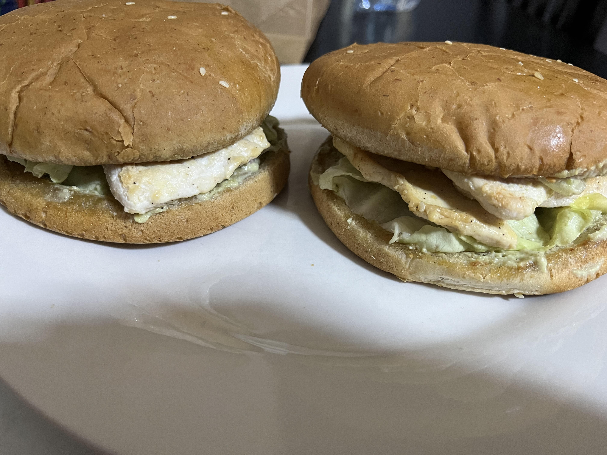

Chicken Avocado Burger

Ingrédients :
- Epices
- Poulet
- Moutarde de Dijon (facultatif)
- 1 avocat
- Cream cheese
- Burger buns
- 1 petit oignon
- 1 tomate
- Vinaigre
- Salade iceberg
- Filet d'huile d'olive
Préparation :
- Découpez le poulet en tranches très fines et faites les cuire et dorer dans une poêle avec un filet d'huile d'olive, du sel et du poivre
- Pendant ce temps, préparéz votre sauce à base d'avocat écrasé, cream cheese et des morceaux de tomate et d'oignons découpés en petits cubes. Pensez à bien l'assaisonner avec sel, poivre et vinaigre
- Dorez vos buns et montez votre burger en y mettant la sauce, la salade iceberg, les morceaux de poulet et rajoutez une couche de moutarde de Dijon si vous le souhaitez
Mon avis :
Un burger en apparence simple mais vraiment délicieux que m'a fait mon frère. Et comme il aime bien compter les calories, je peux vous dire qu'un burger en fait dans les 450. On en a mangé deux chacun et c'était un banger facile à faire. Foncez !